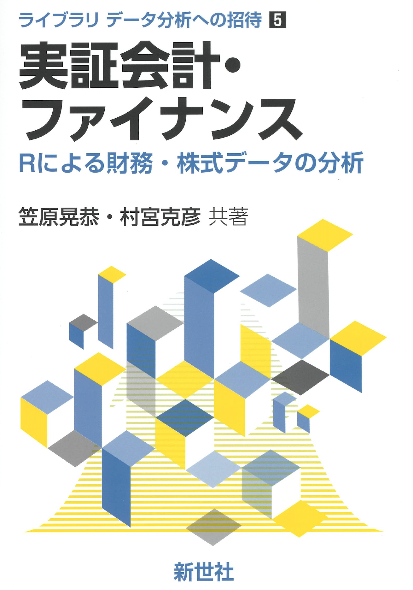

実証会計・ファイナンスのノート

はじめに
この資料は、笠原・村宮 (2022)「実証会計・ファイナンス」をゼミで輪読した際に使用した講義ノートである。本資料の内容は、上記教科書の内容を補足するために作成したもので、基本的には笠原・村宮本の章立てに沿っています。
ただし、本資料の内容は、笠原・村宮本の内容を簡略化しつつ、内容を補足するために作成したものですので、本資料だけで笠原・村宮本の内容を理解することは不可能です。 従って、本資料を理解するためには、笠原・村宮本を読むことを強く推奨します。
数学・算数の準備
この教科書では、紛らわしい表現を避けるため、様々な要素(利子率とか割引率とか投資収益率とか)を記号で表現します。ここでは、それらの記号の意味を説明しておくので、分からなくなったら随時ここに戻って確認するようにしてください。
- キャッシュ・フロー(Cash Flow)：CF
- 無リスク利子率(Risk-Free rate)：R_F
- 現在価値(Present Value)：PV
- 期間や時点(Time)：T
次に、定数(constant)と確率変数(random variable)について説明します。
定数とはある特定の数を意味します。例えば、1や52や0.1などです。 定数は定まった数ですので、不確実性はありません。
確率変数(random variable)は、ある値をとる確率が定義されている変数です。 例えばサイコロの出目は確率変数です。サイコロの出目は1から6までの値をとりますが、どの値が出るかは確定していません。しかし、1から6までの値が出る確率は等しく1/6です。このように、確率変数はある値をとる確率が定義されている変数です。 確率変数であることを明示するために、確率変数には~(チルダ)をつけて表記します。たとえば確率変数Xは\tilde{X}で表記します。
確率変数は、どの値がどの確率で出るのかは分かっていますが、実際どの値が観察されるのかは分かりません。そのため、確率変数は期待値(expectation)と分散(variance)を持ちます。 以下では、期待値を表す演算子として\mathbb{E}[\cdot]を、分散を表す演算子として\mathbb{V}[\cdot]を用います。 ファイナンスや会計学では、リスクを分散で表します。 「リスクがある」とは、結果として実現する値がばらつくことを意味します。 結果が確実に分かっている場合は、リスクがない、つまり分散が0の場合です。
数式
よく出てくるものをまとめておきます。
足し算をまとめて書くときは、\sumを使います。 いま、x_1, x_2, \dots, x_NというN個の数値があるとして、それを足し合わせるときは以下のように書きます。 x_1 + x_2 + x_3 + \cdots + x_n これを\sumを使って書くと以下のようになります。 \sum _{i = 1}^n x_i このほうがシンプルです。
掛け算をまとめて書くときは、\prodを使います。 いま、x_1, x_2, \dots, x_NというN個の数値があるとして、それを掛け合わせるときは以下のように書きます。 x_1 \times x_2 \times x_3 \times \cdots \times x_n これを\prodを使って書くと以下のようになります。 \prod _{i = 1}^n x_i
離散的な変数xの期待値は以下のように書きます。
\mathbb{E}[x] = \sum _{i = 1}^n x_i p_i ここで、p_iはx_iが観測される確率です。 たとえばサイコロの出目Xは\{1,2,3,4,6\}の値を、それぞれ1/6の確率で出す確率変数です。サイコロの出目の期待値は、 \begin{align*} \mathbb{E}[X] &= \frac 16 \times 1 + \frac 16 \times 2 + \frac 16 \times 3 + \frac 16 \times 4 + \frac 16 \times 5 + \frac 16 \times 6\\ & = 3.5 \end{align*} となります。
次に、確率変数の分散は、 \mathbb{V}[x] = \sum _{i = 1}^n (x_i - \mathbb{E}[x])^2 p_i と書きます。これもサイコロの例で考えてみましょう。 サイコロの出目の分散は、
\begin{align*} \mathbb{V}[X] &= \frac 16 \times (1 - 3.5)^2 + \frac 16 \times (2 - 3.5)^2 + \frac 16 \times (3 - 3.5)^2 \\ &+ \frac 16 \times (4 - 3.5)^2 + \frac 16 \times (5 - 3.5)^2 + \frac 16 \times (6 - 3.5)^2\\ & = 2.916666666666666534 \end{align*}
と計算できます。
期待値の特徴
期待値について以下のような特徴があります。
\begin{align} &\mathbb{E}[a] = a \\ &\mathbb{E}[a \tilde X] = a \mathbb{E}[\tilde X]\\ &\mathbb{E}[\tilde X + a] = \mathbb{E}[\tilde X] + a\\ &\mathbb{E}[\tilde X + \tilde Y] = \mathbb{E}[\tilde X] + \mathbb{E}[\tilde Y] \end{align}
1つめの式は、定数aの期待値はaであることを意味します。 2つめの式は、定数aと確率変数\tilde Xの積の期待値は、定数aと確率変数\tilde Xの期待値の積に等しいことを意味します。 3つめの式は、確率変数\tilde Xに定数aを足したものの期待値は、確率変数\tilde Xの期待値に定数aを足したものに等しいことを意味します。 4つめの式は、確率変数\tilde Xと確率変数\tilde Yの和の期待値は、確率変数\tilde Xの期待値と確率変数\tilde Yの期待値の和に等しいことを意味します。
特に4つめの公式は重要で、和の期待値は期待値の和となることを意味してます。よく使うので覚えておいてください。
正6面体のサイコロの出目Xと正4面体のサイコロの出目Yの和の期待値は、 \begin{align*} \mathbb{E}[X] &= 3.5\\ \mathbb{E}[Y] &= \frac 14 \times 1 + \frac 14 \times 2 + \frac 14 \times 3 + \frac 14 \times 4 = 2.5\\ \mathbb{E}[X + Y] &= \mathbb{E}[X] + \mathbb{E}[Y] = 3.5 + 2.5 = 6 \end{align*} となります。
分散の特徴
分散について以下のような特徴があります。
\begin{align} &\mathbb{V}[a] = 0\\ &\mathbb{V}[a \tilde X] = a^2 \mathbb{V}[\tilde X]\\ &\mathbb{V}[\tilde X + a] = \mathbb{V}[\tilde X]\\ &\mathbb{V}[\tilde X + \tilde Y] = \mathbb{V}[\tilde X] + \mathbb{V} [\tilde Y] + \mathbb{Cov}(X,Y)\\ &\mathbb{V}[\tilde X] = \mathbb{E}[\tilde X^2] - \mathbb{E}[\tilde X]^2\\ \end{align}
1つめの式は、定数aの分散は0であることを意味します。自明ですね。 2つめの式は、定数aと確率変数\tilde Xの積の分散は、定数aの2乗と確率変数\tilde Xの分散の積に等しいことを意味します。1つめの式から明らかですね。
3つめの式は、確率変数\tilde Xに定数aを足したものの分散は、確率変数\tilde Xの分散に等しいことを意味します。 4つめの式は、確率変数\tilde Xと確率変数\tilde Yの和の分散は、確率変数\tilde Xの分散と確率変数\tilde Yの分散と共分散の和に等しいことを意味します。これもよく出てくるので覚えておいてください。
5つめの式は、確率変数\tilde Xの分散は、確率変数\tilde Xの2乗の期待値から確率変数\tilde Xの期待値の2乗を引いたものに等しいことを意味します。 つまり分散の計算は、確率変数の2乗の期待値から期待値の2乗を引くことで計算できるということです。これ重要です。 先のサイコロの例で確認してみます。 \begin{align*} \mathbb{V}[X] &= \mathbb{E}[X^2] - \mathbb{E}[X]^2 \\ &= \frac 16 \times 1^2 + \frac 16 \times 2^2 + \frac 16 \times 3^2 + \frac 16 \times 4^2 + \frac 16 \times 5^2 + \frac 16 \times 6^2 - 3.5^2 \\ &= 15.16667 - 12.25 \\ &= 2.916667 \end{align*} となり、上で計算した分散と一致します。